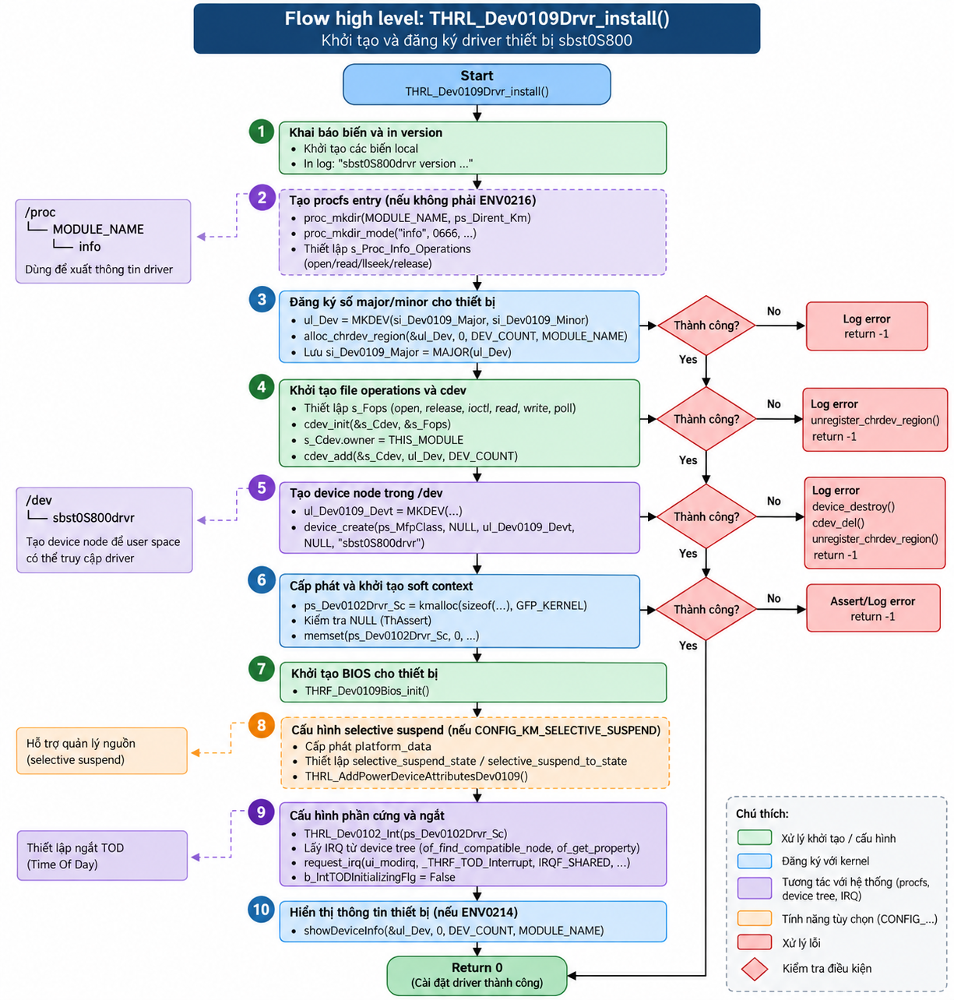

File này là một character device driver Linux điều khiển ASIC xử lý ảnh Dev0109 (bí danh "ASIC777") của máy in đa năng nền tảng S800. Tài liệu dưới đây bóc tách từng hàm thật trong file, kèm sequence theo 6 chức năng chính, và mô tả chi tiết đường đi tới thanh ghi vật lý.
"UserLogic") làm nhiệm vụ xử lý ảnh: DMA scan-in, color convert, ghép trang, nén JBIG cho Fax, DMA print-out. Driver phụ trách luôn một chip thứ hai Dev0102 ("ASIC22") được port từ đời máy cũ.thr_sbst0S800Bios.c 1.2MB). File này chỉ là lớp vỏ character-device: đăng ký cdev, expose ioctl, sở hữu 2 đường IRQ, và cầu nối PM (suspend/resume) sang lớp BIOS.thr_sbst0S800drvr.c là cầu nối giữa userspace (qua /dev/sbst0S800drvr) và ASIC xử lý ảnh của máy in — nó không tự xử lý ảnh, nó chỉ mở cửa, định tuyến lệnh ioctl, và chuyển tiếp ngắt phần cứng.Nhóm theo 6 chức năng. Cột Gọi bởi / Gọi tới cho biết vị trí trong call graph — dùng bảng này như index để nhảy tới §3.
| Nhóm | Hàm | Gọi bởi | Gọi tới (bên ngoài file) |
|---|---|---|---|
| INIT | THRL_Dev0109Drvr_install() | module_init | THRF_Dev0109Bios_init, THRL_Dev0102_Int, request_irq ×2 |
| INIT | THRF_thr_dev0109drvr_initint() | thr_mdul001Instance.c | request_irq(THRL_SysDev0109Int_1) |
| INIT | THRL_Dev0102drvr_configurate() | common driver init chain | THRL_CbPort_create, THRL_BIOS_Dev0102_configurate |
| INIT | THRL_Dev0102drvr_reginit() | common driver init chain | THRL_BIOS_Dev0102_init |
| FILE OPS | THRL_Dev0109Drvr_open() | VFS (user gọi open()) | — (stub) |
| FILE OPS | THRL_Dev0109Drvr_close() | VFS (user gọi close()) | — (stub) |
| FILE OPS | THRL_Dev0109drvr_read() | VFS (user gọi read()) | — (stub) |
| FILE OPS | THRL_Dev0109drvr_write() | VFS (user gọi write()) | — (stub) |
| FILE OPS | THRL_Dev0109drvr_select() | VFS (user gọi poll()) | — (stub) |
| FILE OPS | THRL_Info_Open() | procfs VFS | THRL_Proc_Open (common) |
| FILE OPS | THRL_Show_Info() | THRL_Info_Open → seq_read | seq_printf |
| IOCTL | THRL_Dev0109Drvr_ioctl() | VFS (user gọi ioctl()) | 4 hàm bên dưới + mccpuif_receive_from_process |
| IOCTL | THRF_EnableTODInterrupt_Dev0109() | THRL_Dev0109Drvr_ioctl | enable_irq |
| IOCTL | THRF_DisableTODInterrupt_Dev0109() | THRL_Dev0109Drvr_ioctl | disable_irq |
| IOCTL | THRF_CheckEnableTODInterrupt_Dev0109() | THRL_Dev0109Drvr_ioctl | — (đọc biến tĩnh) |
| IOCTL | THRL_Dev0109Drvr_DbgPrintReg() | THRL_Dev0109Drvr_ioctl | copy_from_user, THRF_get_Dev0109_BaseAddress, THRL_DbgPrintReg |
| IRQ | THRL_SysDev0109Int_1() | Linux IRQ core (HW interrupt) | THRL_ThreadBios_getAsic_1, pfc_InterruptAsic() [function pointer] |
| IRQ | _THRF_TOD_Interrupt() | Linux IRQ core (HW interrupt) | THRF_TOD_Interrupt_Dev0109 |
| IRQ | THRF_TOD_Interrupt_Dev0109() | _THRF_TOD_Interrupt | disable_irq_nosync, THRF_CbBitPort_Out_Long, THRF_SetIreqEn_Dev0109, int_sendMessageDrv |
| IRQ | THRF_SetIreqEn_Dev0109() | THRF_TOD_Interrupt_Dev0109 | THRF_get_Dev0109_BaseAddress, wmb |
| PM | THRL_Dev0109DrvrSuspend() | set_level() sysfs | disable_irq, THRF_Dev0102_Device_Suspend |
| PM | THRL_Dev0109DrvrResume() | set_level() sysfs | THRL_Dev0109IntConfReg, THRF_Dev0102_Device_Resume, enable_irq |
| PM | THRL_Dev0109IntConfReg() | THRL_Dev0109DrvrResume | THRL_BIOS_Dev0109_init |
| PM | show_level() | sysfs read (cat power/level) | sprintf |
| PM | set_level() | sysfs write (echo > power/level) | THRL_Dev0109DrvrSuspend/Resume |
| PM | THRL_AddPowerDeviceAttributesDev0109() | THRL_Dev0109Drvr_install | sysfs_add_file_to_group |
| PM | THRL_RemovePowerDeviceAttributesDev0109() | THRL_Dev0109Drvr_uninstall | sysfs_remove_file_from_group |
| EXIT | THRL_Dev0109Drvr_uninstall() | module_exit | THRL_Dev0109Drvr_Uninit, THRL_Destroy_FreeContainer |
| EXIT | THRL_Dev0109Drvr_Uninit() | THRL_Dev0109Drvr_uninstall | — (no-op) |
| EXIT | THRL_Dev0109drvr_DestroyDevt() | THRL_Dev0109Drvr_uninstall | device_destroy |
| ACCESSOR | getDev0109Suspend() | external callers (audio, etc.) | — (đọc biến tĩnh) |
| ACCESSOR | getDev0109SuspendForSIC() | audio IC subsystem | — (đọc biến tĩnh) |
| ACCESSOR | THRL_Dev0109Drvr_GetVirtualBaseAddr() | external callers cần base addr | THRF_get_Dev0109_BaseAddress |
6 luồng bao trùm toàn bộ vòng đời driver, đọc từ trên xuống theo thời gian thực thi.
THRL_Dev0109_InfoSetUp() chạy ở tầng BIOS trước đó).disable_irq(ui_modirq) và set b_IntTODFlg = False. Cả 2 nhánh đều check cờ trước khi hành động — tránh enable/disable trùng lặp.pfc_InterruptAsic) đã được BIOS gán sẵn lúc configure. Đây là injection point để BIOS layer thay đổi hành vi ngắt mà không cần sửa driver.c.THRL_Dev0109DrvrResume() gọi THRL_Dev0109IntConfReg() (ghi lại toàn bộ register setup — vì suspend có thể đã cắt nguồn ASIC) rồi mới enable_irq().Bấm để mở từng nhóm. Mỗi bước ghi rõ trạng thái trước (input) và sau (output) khi hành động xảy ra.

| # | Bước | Input | Output |
|---|---|---|---|
| 1 | proc_mkdir(MODULE_NAME) + tạo entry "info" | không có gì trong /proc/sbst0S800drvr | thư mục + file "info" xuất hiện trong procfs, gắn s_Proc_Info_Operations |
| 2 | alloc_chrdev_region(&ul_Dev, 0, 1, "sbst0S800drvr") | ul_Dev = 0 | cấp phát động major/minor number, ul_Dev chứa cặp số thiết bị |
| 3 | gán s_Fops (open/release/ioctl/read/write/poll) rồi cdev_init + cdev_add | struct s_Cdev chưa liên kết fops | cdev đã đăng ký với kernel, sẵn sàng nhận syscall |
| 4 | device_create(ps_MfpClass, ..., "sbst0S800drvr") | chưa có file trong /dev | /dev/sbst0S800drvr xuất hiện, user có thể open() |
| 5 | kmalloc + memset THRS_Dev0102DRVR_SOFTC | ps_Dev0102Drvr_Sc = NULL | vùng nhớ softc cấp phát, zero-init, sẵn sàng cho Dev0102 |
| 6 | THRF_Dev0109Bios_init() | struct BIOS instance chưa cấu hình con trỏ thanh ghi | toàn bộ pul_* pointer trong Bios struct trỏ đúng offset MMIO (xem §5) |
| 7 | THRL_Dev0102_Int(ps_Dev0102Drvr_Sc) | softc rỗng | ASIC22 (Dev0102) được cấu hình xong port + register |
| 8 | of_find_compatible_node("mc,tod_req") → of_get_property("interrupts") → irq_of_parse_and_map → request_irq(_THRF_TOD_Interrupt, IRQF_SHARED, "TOD_MC") | ui_modirq = 0 (chưa có) | ui_modirq = số IRQ Linux thật; ISR TOD đã đăng ký, sẵn sàng nhận ngắt |
| 9 | b_IntTODInitializingFlg = False | cờ = True (chặn xử lý ngắt TOD "giả" lúc khởi động) | cờ = False, từ giờ ngắt TOD được xử lý bình thường |
| 10 | return 0 | — | module load thành công, kernel in "<<< sbst0S800drvr version 1.0 >>>" |
| # | Bước | Input | Output |
|---|---|---|---|
| 1 | ui_irq = THRF_get_Dev0109_IRQNo() | IRQ number đã cache từ THRL_Dev0109_InfoSetUp() (chạy sớm hơn, ở tầng Instance) | ui_irq = số IRQ vật lý của ASIC |
| 2 | request_irq(ui_irq, THRL_SysDev0109Int_1, IRQF_SHARED, "DEV0109_INT", ps_Dev0109) | IRQ chưa có handler | Handler HW interrupt chính đã đăng ký, ps_Dev0109 làm dev_id (dùng khi share IRQ line) |
| 3 | kiểm tra sl_ReqRet < 0 | — | nếu lỗi, chỉ log — không return lỗi lên trên (driver tiếp tục load) |
Không phải hàm tự viết trong codebase — đây là API chuẩn linux/interrupt.h. Mục đích: nói cho kernel biết "khi phần cứng nổ ngắt trên đường irq này, hãy gọi handler". Trước khi gọi hàm này, tín hiệu ngắt vật lý của ASIC dù có kéo lên cũng không ai xử lý.
| Tham số | Giá trị truyền | Vai trò |
|---|---|---|
| irq | ui_irq | Số hiệu IRQ Linux (đã dịch từ số ngắt vật lý GIC qua irq_of_parse_and_map() lúc THRL_Dev0109_InfoSetUp()) — key để kernel biết đăng ký cho đường dây nào |
| handler | THRL_SysDev0109Int_1 | Con trỏ ISR, bắt buộc đúng chữ ký irqreturn_t (*)(int irq, void *dev_id) — kernel gọi hàm này mỗi khi ngắt xảy ra trên ui_irq |
| flags | IRQF_SHARED | Cho phép nhiều driver dùng chung 1 đường IRQ vật lý. Khi ngắt nổ, kernel gọi tuần tự tất cả handler đã đăng ký — mỗi handler phải tự kiểm tra "ngắt này của mình không" (xem if(ui_modirq==si_Irq) trong _THRF_TOD_Interrupt) rồi trả IRQ_NONE nếu không phải |
| name | "DEV0109_INT" | Chuỗi hiển thị trong /proc/interrupts — thuần debug, không ảnh hưởng logic |
| dev | (char*)ps_Dev0109 | Bắt buộc khác NULL khi dùng IRQF_SHARED (kernel enforce). Được truyền ngược lại làm tham số 2 (pv_Param) của ISR; cũng là "chìa khóa" để free_irq() biết gỡ đúng handler nào khi nhiều handler share 1 IRQ. Lưu ý: THRL_SysDev0109Int_1 thực tế không dùng tham số này — nó tự gọi lại THRL_ThreadBios_getAsic_1() để lấy instance qua biến toàn cục |
| # | Kernel làm gì bên trong |
|---|---|
| 1 | Tìm struct irq_desc tương ứng với irq trong bảng nội bộ |
| 2 | Tạo struct irqaction mới chứa handler/flags/name/dev_id |
| 3 | Nếu IRQ đã có action khác → kiểm tra cả 2 bên đều IRQF_SHARED, nếu không → trả -EBUSY |
| 4 | Chèn irqaction vào chain (linked list) của irq_desc |
| 5 | Nếu là handler đầu tiên trên IRQ đó → unmask đường ngắt thật ở tầng GIC |
Giá trị trả về: 0 = thành công; số âm (-EBUSY, -EINVAL...) = thất bại. Điểm đáng chú ý: giống pattern ở install(), nếu request_irq() fail ở đây, driver chỉ log lỗi qua ThLogMsg rồi tiếp tục chạy bình thường — không return lỗi lên trên, không rollback. Module vẫn "load thành công" nhưng ASIC sẽ không bao giờ báo ngắt được — silent failure khó debug nếu gặp trên thực tế.
| Hàm | Input | Action | Output |
|---|---|---|---|
| THRL_Dev0109Drvr_open | inode*, file* | không làm gì | return 0 — open luôn thành công vô điều kiện |
| THRL_Dev0109Drvr_close | inode*, file* | không làm gì | return 0 |
| THRL_Dev0109drvr_read | file*, buf, count, off | không làm gì | return 0 — báo "đọc được 0 byte", tương đương EOF ngay lập tức |
| THRL_Dev0109drvr_write | file*, buf, count, off | không làm gì | return 0 — báo "ghi được 0 byte" |
| THRL_Dev0109drvr_select | file*, poll_table* | không làm gì | return 0 — không bao giờ báo sẵn sàng đọc/ghi qua poll() |
Vì sao để stub: comment gốc năm 2017 ghi "S800 UART、GPIO対応 不要な処理を削除" (xoá xử lý không cần thiết khi hỗ trợ UART/GPIO cho S800) — nghĩa là bản thân các entry point này từng có code thật (đọc/ghi trực tiếp thanh ghi UART qua file I/O) nhưng đã bị gỡ bỏ khi kiến trúc chuyển hẳn sang dùng ioctl làm API duy nhất.
| # | Bước | Input | Output |
|---|---|---|---|
| 1 | Validate command range | si_Command bất kỳ từ userspace | nếu < 10000 (THRD_DEV0109_MIN_COMMAND) → return -EINVAL ngay, không xử lý gì thêm |
| 2 | switch(si_Command) | command đã qua validate | định tuyến tới 1 trong 5 case cụ thể |
| 2a | case DBG_PRINT_REG (90001) | ul_Arg = con trỏ userspace tới THRS_ReqDbgPrintRegArg | gọi THRL_Dev0109Drvr_DbgPrintReg, dump register ra kernel log |
| 2b | case ENABLE_TODINTERRUPT (10001) | kiểm tra b_IntTODFlg == False | set e_KernelTodInterrupt = RCV_THREAD marker, gọi Enable → IRQ bật |
| 2c | case DISABLE_TODINTERRUPT (10002) | kiểm tra b_IntTODFlg == True | gọi Disable → IRQ tắt |
| 2d | case CHECK_TODINTERRUPT (10003) | ul_Arg = con trỏ userspace tới THRS_checkEnableTODInterruptArg | copy_to_user() ghi giá trị b_IntTODFlg hiện tại ra cho app đọc |
| 2e | case MCCPUIF_RECEIVE_FROM_PROCESS (10004) | ul_Arg = con trỏ dữ liệu từ main firmware | chuyển tiếp nguyên si cho mccpuif_receive_from_process() ở module khác xử lý |
| 2f | default | command không khớp case nào (nhưng vẫn ≥ 10000) | ThAssert(False, ...) — kernel assert fail, log lỗi command không hỗ trợ |
| 3 | return 0 | — | luôn trả 0 (thành công) trừ case validate ở bước 1 |
| # | Bước | Input | Output |
|---|---|---|---|
| 1 | copy_from_user() | con trỏ userspace ps_PrintRegArg | struct s_PrintRegArg trong kernel space, chứa AsicIndex/BaseAddrIndex/Offset/Size |
| 2 | map AsicIndex → AsicUID | e_AsicIndex = THRE_ASIC_0 | e_AsicUID = THRE_AsicUID_Asic_1 (case khác → assert fail) |
| 3 | THRF_get_Dev0109_BaseAddress(e_AsicUID, e_BaseAddrIndex) | index vùng nhớ (0-4) | địa chỉ ảo (virtual address) của vùng MMIO tương ứng; nếu =0 thì log lỗi và thoát sớm |
| 4 | __pa(ul_BaseAddress) | địa chỉ ảo | địa chỉ vật lý tương ứng — gán vào s_PrintRegInfo.sync_PhisicalAddr |
| 5 | THRL_DbgPrintReg(&s_PrintRegInfo) | struct chứa cả virtual + physical address, offset, size | in ra kernel log nội dung thanh ghi tại địa chỉ đó (theo Offset/Size yêu cầu) |
| # | Bước | Input | Output |
|---|---|---|---|
| 1 | THRL_ThreadBios_getAsic_1() | không tham số | pu_BIOS_Asic — con trỏ tới instance BIOS toàn cục (assert fail nếu NULL) |
| 2 | THRL_BIOS_Dev0109_getInterrupt(&s_BIOS_Dev0109) | instance BIOS | ps_Interrupt — struct chứa toàn bộ con trỏ thanh ghi interrupt + pfc_InterruptAsic |
| 3 | ps_AsicInt = &ps_Interrupt->s_AsicInt | — | lấy phần chung (base class kiểu C) của interrupt struct |
| 4 | ps_AsicInt->pfc_InterruptAsic(ps_AsicInt) | function pointer đã gán từ lúc configure BIOS | toàn bộ việc đọc confirm-reg, xác định DMA nào done/error, dispatch callback — xảy ra bên trong hàm được trỏ tới (nằm ở Bios.c, ngoài phạm vi file này) |
| 5 | return IRQ_HANDLED | — | báo Linux: ngắt đã xử lý xong |
Mục đích: đây không phải logic nghiệp vụ — là guard chống null-pointer/điều kiện bất khả thi trước khi dereference. Tham số 1 là điều kiện phải đúng (giống assert() chuẩn C). Bên trong THRL_ThAssert2(), code chỉ hành động khi điều kiện SAI:
if( b_IsAssert == False ){ …toàn bộ chuỗi xử lý fatal… }
→ nếu điều kiện đúng (trường hợp bình thường), hàm return ngay, chi phí gần như 0.
| # | Khi điều kiện SAI — chuỗi xử lý bên trong THRL_ThAssert2() | Input | Output |
|---|---|---|---|
| 1 | THRL_SetTaskMonitorFlg(False, 0) | — | dừng task monitor — tránh watchdog khác nhảy vào giữa lúc đang xử lý lỗi |
| 2 | Ghi vào ring buffer s_AssertData[] (bảo vệ bằng raw_spin_lock_irqsave) | message, p1-p4, us_FA14DetailCode | lưu message + jiffies (timestamp) + ul_ErrCode (CFA14/16/17/18) + detail code — an toàn gọi từ interrupt context vì dùng raw spinlock, không sleep |
| 3 | ThLogMsg(...) + dump_stack() | — | in toàn bộ kernel stack trace ra log — "chụp ảnh" trạng thái ngay lúc lỗi xảy ra (bỏ qua bước này nếu là CFA17 — lỗi kẹt giấy "biết trước") |
| 4 | int_sendMessageDrv(TID_ReqProcHigh, TM_REQ_ThAssert, &s_AssertData[idx], ...) | — | gửi message tới process/thread giám sát cấp cao để xử lý ở tầng ứng dụng (hiện lỗi màn hình, ghi log persistent...) |
| 5 | if( in_interrupt() ) return; | context hiện tại (task thường hay ISR?) | điểm mấu chốt — nếu đang chạy trong ngắt cứng → dừng ở đây, KHÔNG block (blocking trong ISR sẽ treo cả CPU/đường IRQ đó) |
| 6 | THRF_DebugForever(ul_ErrCode, ...) | — | ghi mã lỗi vào struct static để debug tool (JTAG/panel) đọc được; nếu đã có fatal trước đó thì bỏ qua (không lồng nhau) |
| 7 | sema_init(&s_Sem,0); down_interruptible(&s_Sem); | chỉ chạy nếu KHÔNG ở interrupt context | khởi tạo semaphore giá trị 0 rồi chờ mãi mãi (không ai up() nó) — task gọi assert bị "đóng băng" tại đúng điểm này để giữ nguyên trạng thái cho debugger, các task khác vẫn chạy bình thường |
Vì sao thiết kế "treo thay vì crash": đây không phải panic()/BUG() kiểu Linux chuẩn (không reboot toàn hệ thống). Máy in không có màn hình debug, không SSH được, và một bug nhỏ không nên khiến cả máy phải reboot giữa chừng job in dở. Nếu lỗi xảy ra ở task thường → chỉ task đó đóng băng, phần còn lại (in ấn, fax, UI panel) vẫn sống. Nếu lỗi xảy ra trong ISR (như THRL_SysDev0109Int_1 đang xét) → không được phép block, nên chỉ log + gửi cảnh báo rồi return ngay ở bước 5.
Ý nghĩa CFA14_DetailCode0xA42E: chỉ là một ID hex duy nhất gắn với đúng dòng code này (mỗi lời gọi ThAssert trong toàn bộ codebase có detail code riêng) — dùng để kỹ sư field tra log và biết ngay chính xác dòng nào gây lỗi mà không cần tái hiện bug. CFA14_DebugFatal = 0xFA14 là mã lỗi chung cho "software error của thread", phân biệt với CFA16 (tham số bất thường), CFA17 (buffer overrun do kẹt giấy — xử lý nhẹ hơn, không dump_stack/không treo), CFA18 (lỗi tín hiệu VD lúc khởi động DMA).
| # | Bước | Input | Output |
|---|---|---|---|
| 1 | if(ui_modirq == si_Irq) | si_Irq nhận từ Linux IRQ core (vì IRQF_SHARED nên có thể bị gọi nhầm dòng) | nếu khớp → tiếp tục; nếu không khớp → chỉ printk cảnh báo, return IRQ_HANDLED |
| 2 | e_KernelTodInterrupt = ...S800_RCV_CNT | — | ghi marker debug — dùng để trace nguồn gốc sự kiện khi phân tích log sau này |
| 3 | gọi THRF_TOD_Interrupt_Dev0109() | — | (xem các bước bên dưới) |
| 4 | disable_irq_nosync(ui_modirq) | IRQ đang enable | IRQ tắt ngay trong context ngắt (bản _nosync không chờ ISR khác đang chạy kết thúc — an toàn để gọi từ chính ISR) |
| 5 | b_IntTODFlg = False | True | False — đánh dấu để ioctl CHECK biết ngắt đang tắt |
| 6 | if(b_IntTODInitializingFlg) return | cờ init lúc boot | nếu vẫn đang trong giai đoạn khởi động → bỏ qua phần gửi tín hiệu bên dưới (tránh xử lý ngắt "giả" đầu tiên) |
| 7 | THRF_CbBitPort_Out_Long(IREQ_DEV0201_OUT, 1) | — | ghi 1 ra một output port bit — tín hiệu phần cứng phụ trợ (chống trễ theo comment gốc) |
| 8 | THRF_SetIreqEn_Dev0109() | — | ghi trực tiếp thanh ghi X_IREQEN (địa chỉ = BaseAddress4 + offset) → phần cứng dừng phát IREQB |
| 9 | e_KernelTodInterrupt = ...S800_END | — | marker debug kết thúc chuỗi xử lý |
| 10 | int_sendMessageDrv(TID_ReqProcHigh, TM_REQ_intTOD, 0, 0) | — | gửi RTSIG (real-time signal) đến process userspace đang chờ — đây là điểm chuyển giao kernel→userspace |
| # | Bước | Input | Output |
|---|---|---|---|
| 1 | uc_IreqEn = 0x02 | — | giá trị bit-field cần ghi: bit0=0 (cho phép X_IREQAIN), bit1=1 (dừng X_IREQBIN) |
| 2 | THRF_get_Dev0109_BaseAddress(Asic_1, BASE_ADDRESS_4) | — | địa chỉ ảo vùng thanh ghi "Print" (khối 4) |
| 3 | pul_IreqEnPrint = base + THRD_DEV0109_IREQEN_PRINT | base address | con trỏ trỏ đúng vào thanh ghi X_IREQEN vật lý |
| 4 | *pul_IreqEnPrint = uc_IreqEn | giá trị cũ tại thanh ghi (log lại trước khi ghi) | GHI TRỰC TIẾP — không qua writel(), chỉ deref con trỏ volatile |
| 5 | wmb() | — | write memory barrier — đảm bảo CPU/compiler không reorder, ghi thật sự "chạm" tới bus trước khi hàm return |
| Hàm | # | Bước | Input | Output |
|---|---|---|---|---|
| Suspend | 1 | check điều kiện (state≠NONE hoặc Warp SUSPEND) | sc_SuspendStatus | nếu không thỏa → chỉ log cảnh báo, thoát |
| 2 | disable_irq(THRF_get_Dev0109_IRQNo()) | IRQ đang bật | IRQ tắt hẳn (không phải _nosync — chờ ISR đang chạy xong) | |
| 3 | THRF_Dev0102_Device_Suspend() | — | Dev0102 (ASIC22) cũng chuyển sang trạng thái suspend | |
| 4 | set 2 cờ suspend + lưu state vào platform_data | — | b_Dev0109_suspend=True, b_Dev0109_suspend_ForSIC=True, state ghi vào sysfs attr | |
| Resume | 1 | check điều kiện tương tự (đảo ngược) | sc_SuspendStatus | nếu không thỏa → log, thoát |
| 2 | b_Dev0109_suspend = False | True | False | |
| 3 | THRL_Dev0109IntConfReg(&s_BIOS_Dev0109, True) | "đã reset sdram" = True | ghi lại toàn bộ giá trị mặc định vào thanh ghi ASIC (vì suspend có thể đã cắt điện, mất state) | |
| 4 | THRF_Dev0102_Device_Resume() → enable_irq() | — | Dev0102 resume, IRQ Dev0109 bật lại — hệ thống hoạt động bình thường |
| # | Bước | Input | Output |
|---|---|---|---|
| 1 | THRL_Dev0109Drvr_Uninit() | — | không làm gì (hàm rỗng — để trống có chủ đích, comment "S800はSoC1200と同様に特に何もしない") |
| 2 | THRL_Destroy_FreeContainer() | — | giải phóng free container (bộ nhớ quản lý chung, dùng chung nhiều driver) |
| 3 | THRL_Dev0109drvr_DestroyDevt() | device đang tồn tại trong /dev | device_destroy() — file /dev biến mất |
| 4 | cdev_del(&s_Cdev) | cdev đang active | cdev gỡ khỏi kernel, không nhận syscall mới nữa |
| 5 | unregister_chrdev_region(ul_Dev, 1) | major/minor đã cấp phát | trả lại số hiệu thiết bị cho kernel pool |
| 6 | (code thừa — không nên có) re-alloc_chrdev_region + device_create lần nữa | — | kfree(platform_data) — dọn dẹp vùng nhớ selective-suspend attrs; xem cảnh báo ở §4 |
cdev_del + unregister_chrdev_region, hàm lại gọi alloc_chrdev_region và device_create một lần nữa — trông giống code copy-paste từ install() bị dán nhầm vào uninstall() rồi không ai dọn. Đọc code không nên coi đây là "logic tái tạo device khi unload" — nhiều khả năng là bug/rác lịch sử.
THRF_SetIreqEn_Dev0109() (ghi X_IREQEN) và THRL_Dev0109Drvr_DbgPrintReg() (đọc để debug). Toàn bộ 59 DMA channel, interrupt confirm/mask, AXI arbiter nằm ở thr_sbst0S800Bios.c — đọc nhầm file này để tìm logic xử lý ảnh sẽ không thấy gì.
struct dev_pm_ops hay .suspend/.resume trong device_driver — thay vào đó tự chế sysfs attribute "power/level" và gọi thẳng hàm suspend/resume khi ghi vào đó. Nếu tìm cách hook vào PM framework chuẩn của Linux (như pm_runtime_*) sẽ không thấy gì ở đây.
IRQF_SHARED — nghĩa là đường dây ngắt vật lý này có thể được nhiều thiết bị khác dùng chung. ISR luôn phải tự kiểm tra "ngắt này có phải của mình không" trước khi xử lý (xem bước kiểm tra ui_modirq == si_Irq trong _THRF_TOD_Interrupt) — nếu không, driver khác dùng chung dây có thể bị gọi nhầm handler.
ThAssert trong THRL_SysDev0109Int_1() chỉ là guard chống null-pointer, nhưng cơ chế phía sau nó đáng chú ý: khi assert thất bại, hành vi phụ thuộc ngữ cảnh gọi — nếu gọi từ task thường thì task đó bị treo vĩnh viễn (chờ semaphore không ai up()) để giữ nguyên trạng thái cho debug, nhưng nếu gọi từ ISR (đúng như trường hợp này) thì không được phép block — chỉ log + dump_stack + gửi cảnh báo rồi return ngay. Xem chi tiết đầy đủ ở khối "ThAssert()" trong §3.
request_irq() trong driver này (TOD và DEV0109 HW) đều dùng IRQF_SHARED — kernel sẽ từ chối đăng ký nếu dev_id là NULL. Tham số này còn đóng vai trò "chìa khóa" để free_irq() sau này biết gỡ đúng handler khi nhiều driver share chung 1 đường IRQ — nhưng như đã nói ở điểm 1, driver này chưa từng gọi free_irq(). Xem chi tiết đầy đủ ở khối "request_irq()" trong §3.
Đây là phần quan trọng nhất để hiểu bản chất driver — không qua PCI BAR, không qua I2C/SPI, mà qua Memory-Mapped I/O (MMIO) trên một khối logic tùy biến được Device Tree đặt tên "UserLogic".
volatile + wmb() đủ để chặn compiler reorder và đảm bảo write hoàn tất — nhưng thiếu tính di động (portability) sang kiến trúc khác so với dùng writel()/readl() chuẩn.